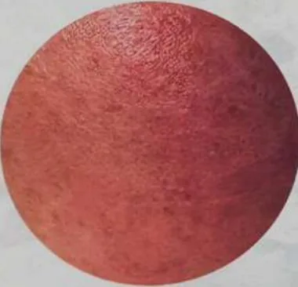
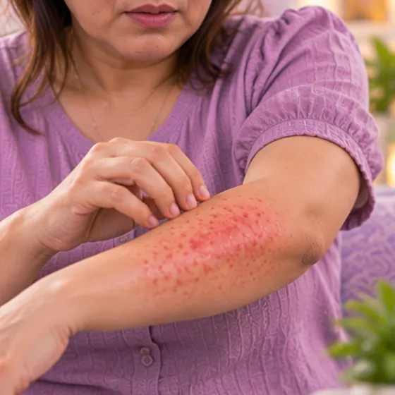
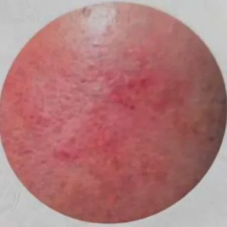
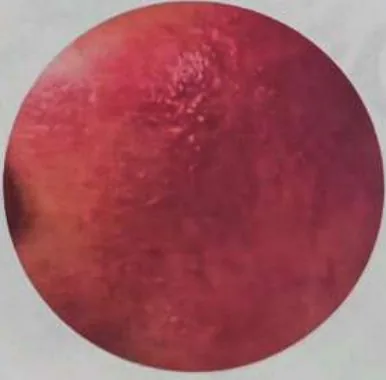

敏感性皮肤
皮肤容易刺痛、灼热、发痒或发红，别人能用的东西它却受不了
这是什么
敏感性皮肤对护肤品、肥皂、阳光、风、热或压力很容易有反应，可能感觉紧绷或刺痛，皮肤发红，或变得干燥发痒。
- 皮肤，常见于脸和手
- 任何人；干性皮肤更常见
- 刺痛、紧绷、容易发红
- 就诊科室
- 家庭医生或皮肤科医生
- 多发人群
- 任何人；皮肤干燥或有湿疹的人更常见
- 传染性
- 不传染
- 病程
- 常是长期的，但温和护肤并减少诱因可以让皮肤平静下来
常见表现
皮肤瘙痒瘙痒 
红疹皮疹 皮肤干燥脱屑皮肤干燥
敏感肌的3个阶段

轻度：角质薄，脸颊像打了腮红，天气变化时干燥发红 中度：泛红、灼热、痒或刺痛，出现小疹子 
重度：红肿热、大面积泛红、反复起疹，请先看医生
敏感还是过敏？
- 敏感肌：对天气、化妆品或洁面产品反应过度
- 过敏：身体对某种物质（食物、药物、花粉）产生反应，要找出过敏原并看医生
修复屏障小贴士
- 用清水或温和洁面，轻拍擦干，不要用力擦
- 避免皂基、酸类、酒精和香精
- 敏感期不要磨砂或按摩脸部
- 修复大约需要1到6个月，要有耐心
- 每天防晒和保湿，避免桑拿和过热的水
为什么会这样
空气干燥与冷气低湿度 
压力大心理压力
其他原因
- 皮肤屏障较弱，皮肤容易失水，刺激物也容易进入
- 刺激性强的肥皂、磨砂膏、功效强的护肤品、香水，或同时用太多产品
- 有时背后是湿疹等皮肤问题，或对某种产品过敏
出现这些情况请先看医生
- 使用某种产品后嘴唇、舌头、脸或喉咙肿胀，或呼吸困难：拨打999
- 产品入眼后疼痛、严重发红或视力模糊：先用清水冲洗，并立即去医院
- 用了某种产品后起水疱、渗液，或皮疹肿胀、迅速扩散：当天看医生
- 出现黄色结痂、脓、局部红肿发热，或发烧，可能是感染
- 即使温和护理，发红或疼痛仍持续数周
- 脸上起皮疹，并伴有发烧、关节痛或觉得很不舒服
如果有以上情况，请先看医生，再来做调理。
本页只是一般性的健康资讯。请继续按时服用平常的药物，并继续看医生。
请继续日常治疗
请继续按医嘱服药，并按时复诊。我们的调理是温和的辅助，不能代替医疗。
日常护理
注意防晒防晒
更多自我照顾的方法
- 用温和、无香料的洗面乳和润肤乳，并用温水洗脸
- 护肤步骤保持简单，一次只增加一种新产品
- 新产品先在一小块皮肤（例如手臂内侧）上试用几天
- 轻轻按干皮肤，不要用力搓，避免很热的热水澡
告诉理疗师
- 皮肤破损、发红或疼痛
- 严重过敏
- 怀孕
调理师会在开始前和你确认这一项。
常见问题
敏感性皮肤是什么？
皮肤容易刺痛、灼热、发痒或发红，别人能用的东西它却受不了。敏感性皮肤对护肤品、肥皂、阳光、风、热或压力很容易有反应，可能感觉紧绷或刺痛，皮肤发红，或变得干燥发痒。
敏感性皮肤有哪些常见表现？
皮肤瘙痒；红疹；皮肤干燥脱屑
为什么会有敏感性皮肤？
空气干燥与冷气；压力大
有敏感性皮肤要怎么照顾自己？
注意防晒
AI Body Master 的调理对敏感性皮肤有帮助吗？
调理是温和的无针经络养生辅助，不能治疗或治愈敏感性皮肤，也不能代替药物或医生。开始前请告诉理疗师。
相关疾病
参考资料: General information based on public health sources such as Mayo Clinic, NHS, Cleveland Clinic and NCBI StatPearls.
页面更新: 2026-11-01